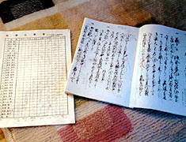
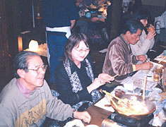

| 見たい項目をクリックして下さい | |||||||||
|
| 行 事 記 録 （詳 細 - １８） |
| 第２回古文書解読教室 |
| 掲載日 ０４−１−１ |
|
行 事 名 |
第２回古文書解読教室 |
|
研 究 部 会 |
古文書研究会 |
|
実 施 日 |
０３年８月１１日〜１２月１５日 (全７回) ８月〜 ９月 １０：００〜１２：００ １０月〜１２月 １８：００〜２０：００ |
|
実 施 場 所 |
神奈川県民活動サポートセンター |
|
参 加 者 |
会員２０名 ( 天野、新井、石田、小方、尾田、小野寺、金田、佐伯、佐藤、塩見、 柴田、清水、須田、須藤、竹内、坪井、徳永、西田、野々山、堀 ） 会員外１０名 （１期： 岡、片平、清瀬、久世、､半澤、広脇、藤田、 ３期： 石野、 歴博関連： 佐藤直美、野寄 ） 合計３０名 ８月１１日（２８）、 ８月２５日（２７）、 ９月８日（２５）、 ９月２２日（２３）、 |
| 記 録 | 佐伯良江 |
|
概 要 |
江戸時代の相互監視的な隣保組織である、「五人組取締」を通読し､江戸時代の農民社会へ分け入った思い。農民の日常生活に関する規定中心に､道徳律､慣習法、年貢納入の連帯責任制から牢人の取締りと事細かく書かれてあり､思わず土臭い時代劇の場面が目に浮かぶ。（ご参考に、本ホームページに連載されている天野会員の「江戸時代散策」をお読み下さい。） |
| ｢古文書解読教室を受講して｣ 石野禎一 講座の真の目的など考えずに、前から興味のあったこの講座に参加させて頂きました。夜の講義になってサボっていますが、参加しての感想を述べますと･･･。 （１）ニ期の皆様のすごいエネルギーと団結力、連帯感、仲間意識を感じました。まず、会うことを楽しんでおられるようで部外者 ( と言ってはいけないのですが ) 圧倒されるものを感じています。「コレハタダゴトデハナイ」 と。 （２）講義にはとても満足していますが、何せ記憶力の衰えは如何ともし難く、数行前に出てきた字がもう次には読めなくて悪戦苦闘しています。古文書の楽しみ方の一つには「推理すること」があると思いますが、前以って読んでおくと少し推理ができて上達の助けになるかと思います。 |
|  | ||||
| 井上先生の授業風景 江戸時代の御法度の裏を読む--- |
|
出席簿（左）と 読破した五人組帳前書(右） |
|
第２回古文書解読教室 修了を祝って乾杯 |
| |
|
|||
| 井上先生の博士号授与を 祝ってささやかな記念品を贈呈 |
|
団欒の中に宴は進む |
||
| |
|
|||
| 宴たけなわで、ハリー・ポッターに因んだ寸劇が出現！ | ||||
|  | |
|
||
| １期、２期、３期、歴博関係の皆さんも和気藹々 | ||||
| また、第３回教室でお会いしましょう！ | ||||
|
| 記録の一覧表 に戻る |